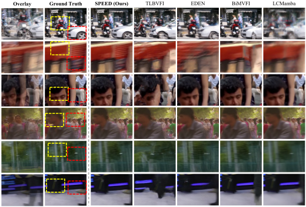
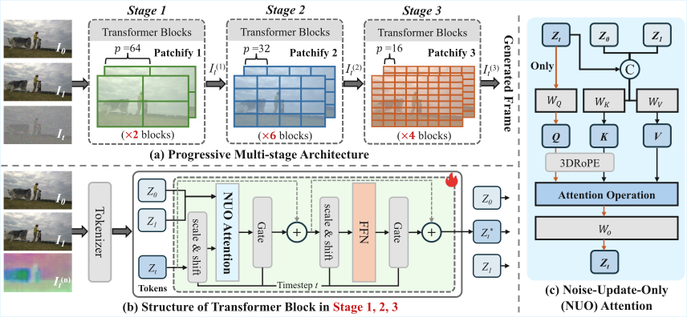

Visualization Results


ACM MM 2026
Diffusion models have recently achieved strong results in Video Frame Interpolation (VFI), but existing latent diffusion approaches still lose fine-grained details during VAE encoding and decoding and suffer from expensive multi-step sampling. SPEED addresses both limitations with a one-step pixel diffusion framework: it performs interpolation directly in RGB pixel space and generates the intermediate frame with a single forward pass.
SPEED combines a progressive multi-stage Transformer, Noise-Update-Only Attention, and Drift-aware Timestep Sampling. The model first captures global motion with large patches, then refines structural alignment, and finally synthesizes high-frequency textures with fine-grained patches. This design preserves sharp details while improving inference speed and memory efficiency.

We introduce SPEED, a one-step pixel diffusion framework for high-quality video frame interpolation. Unlike previous latent diffusion VFI methods, SPEED performs denoising directly in the RGB pixel space, avoiding VAE-induced detail loss while bypassing expensive iterative sampling.
Our framework adopts a progressive multi-stage Transformer with dynamic patch scaling from
64 -> 32 -> 16, enabling a macroscopic-to-microscopic generation process that first
captures large-scale motion, then refines structural alignment, and finally synthesizes fine-grained
textures. We further introduce Noise-Update-Only (NUO) Attention to update only the noisy target-frame
tokens while preserving clean condition-frame semantics, and Drift-aware Timestep Sampling (DTS) with
direct clean-frame prediction to enable high-quality one-step inference.


@inproceedings{zhang2026speed,
title = {SPEED: One-Step Pixel Diffusion for High-quality Video Frame Interpolation},
author = {Zhang, Zihao and Zhao, Haoyu and Yang, Siqian and Wu, Yidi and Jiang, Yudong and Wu, Zuxuan},
booktitle = {Proceedings of the ACM International Conference on Multimedia},
year = {2026},
}